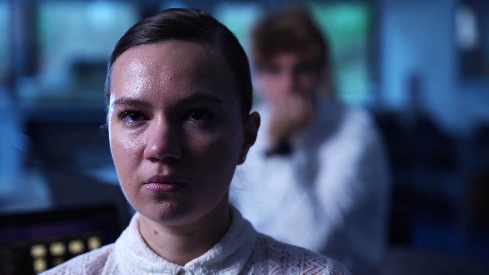
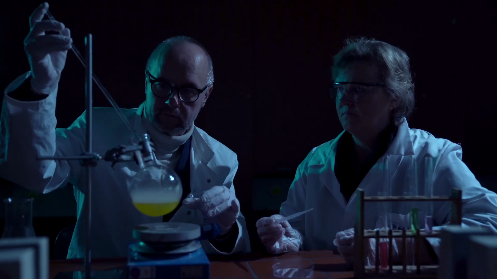
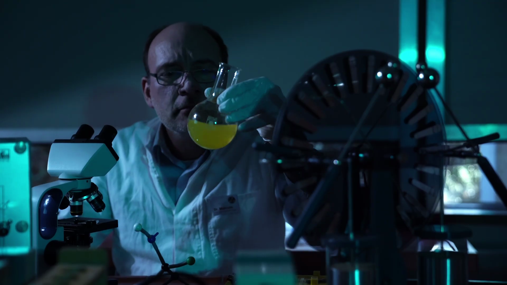
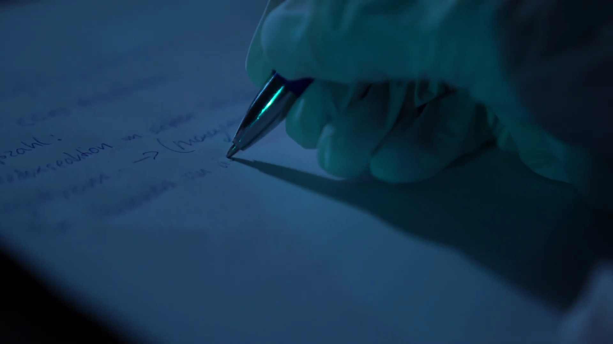
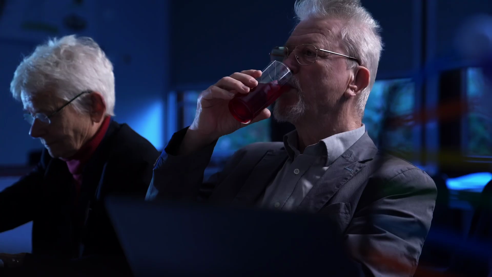
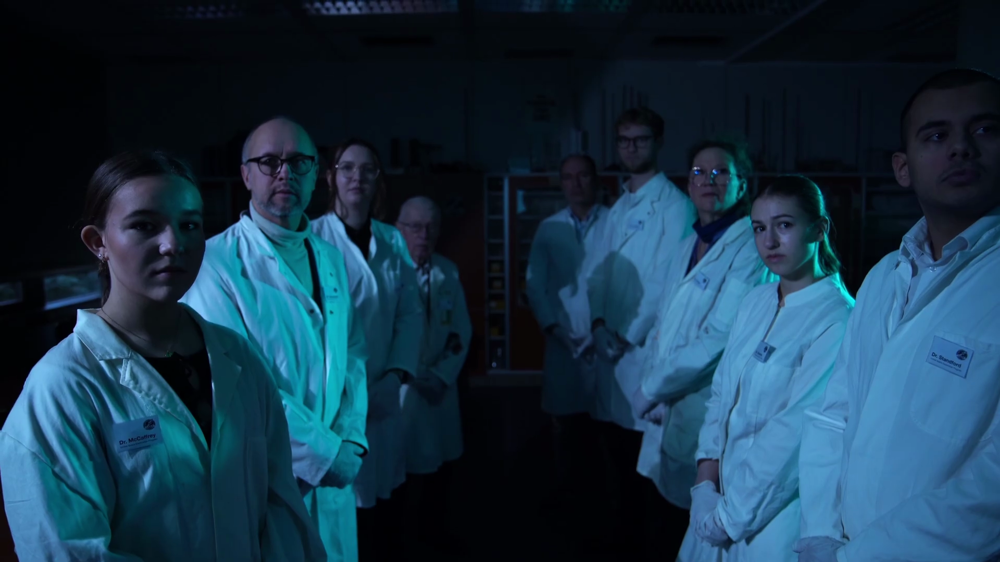
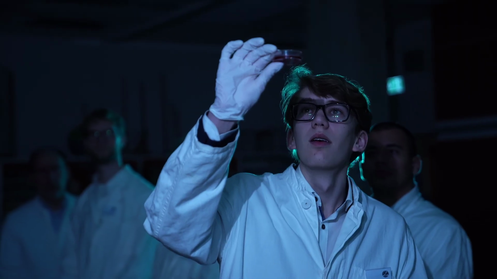
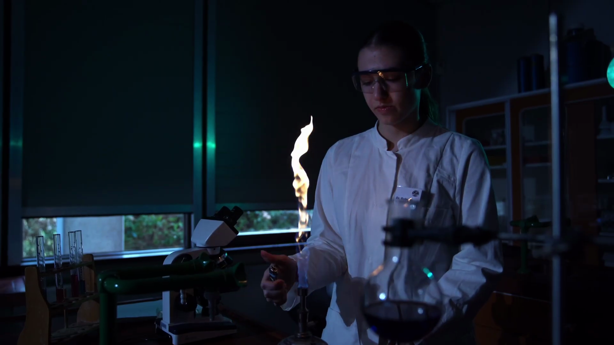
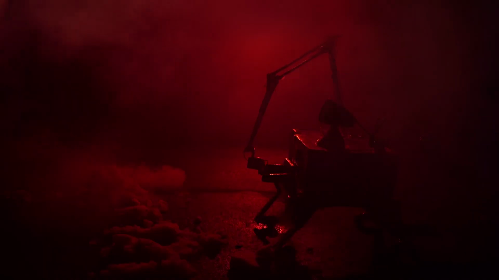
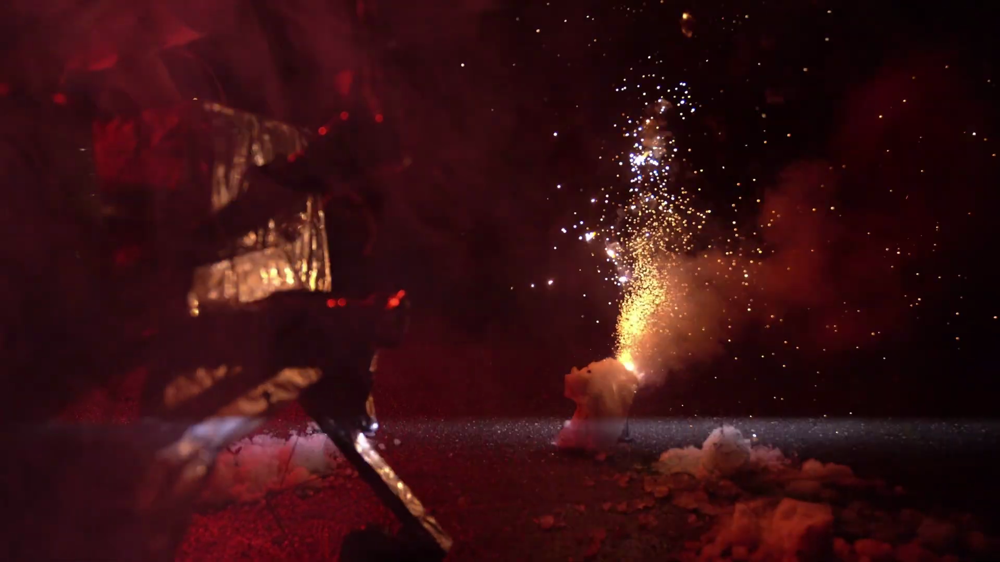

Der Film basiert auf dem Konzept der Transposons – genetische Elemente, die sich innerhalb eines Genoms bewegen und Informationen extrem schnell verändern können.

Eine wissenschaftliche Mission entwickelt sich zu einem unkontrollierbaren biologischen Risiko.

Der Planet Gamma 7R wird durch praktische Effekte, Licht und Nebel als fremde Welt inszeniert.

Im Kontrollzentrum werden die Daten des Rovers in Echtzeit analysiert.

Die Entdeckung der Mikroben führt zu wissenschaftlicher Euphorie.

Das Labor verschiebt sich von Kontrolle zu Übermut.

Unter dem Mikroskop zeigt sich die Struktur der Transposons.

Chemische Experimente visualisieren die Instabilität der Proben.

Temperatur- und Drucktests verändern das Verhalten der Mikroben drastisch.

Eine Probe wird gasförmig – ein kritischer Wendepunkt.

Erste körperliche Symptome der Infektion treten auf.

Der Tee wird zum unbemerkten Übertragungsweg der Kontamination.

Das Meeting erklärt die Situation offiziell als „unter Kontrolle“.

Lichtdesign erzeugt Kontrast zwischen Kontrolle und Realität.

Der kontaminierte Tee wird unwissentlich serviert.

Die Forschung läuft weiter, obwohl die Gefahr eskaliert ist.

Das Ende zeigt einen zyklischen Kontrollverlust wissenschaftlicher Systeme.